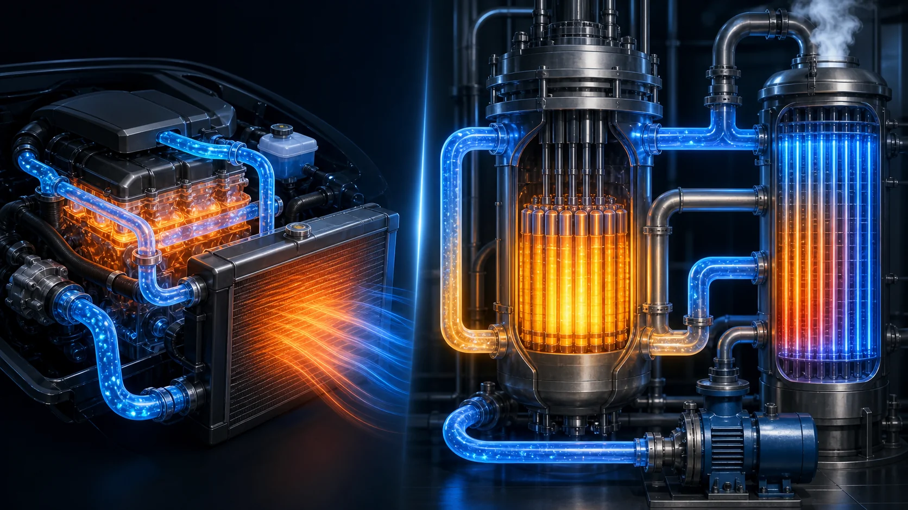
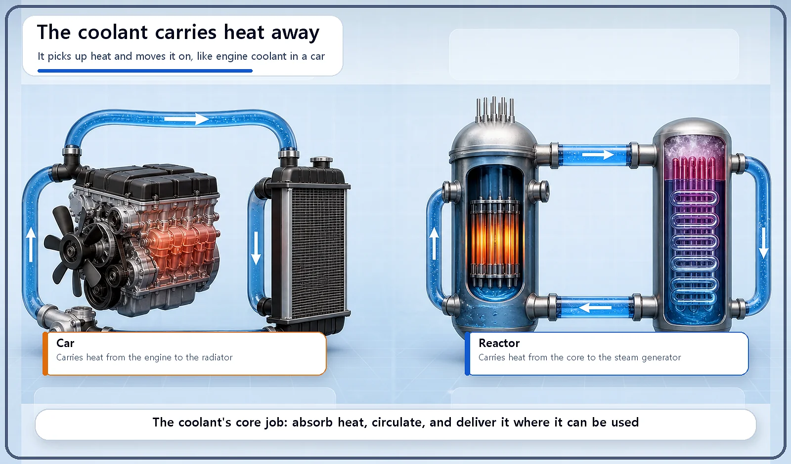
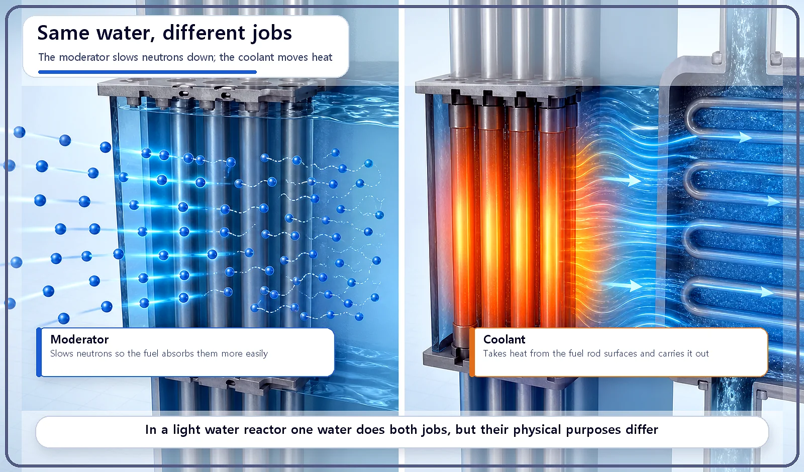

Reactor Components · 056
Like the Coolant in Your Car — What a Reactor Coolant Really Does
Like engine coolant in a car, reactor coolant soaks up heat in the core and carries it away in a closed loop to where it can be used.

The coolant absorbs the heat produced at the surface of the fuel rods and carries it out of the reactor, to the next system such as the steam generator. The moderator slows neutrons down; the coolant moves heat. In a light water reactor ordinary water does both jobs, but the two purposes are different.
Ever popped the hood of a car?
A car engine burns fuel and throws off heat the whole time it runs. Leave that heat where it is and the engine overheats and breaks down. So a liquid coolant snakes through passages all around the engine, soaks up the heat, and carries it to the radiator. There the coolant gives up its heat to the air, then flows back into the engine to do it all again.
When we looked at the moderator, we noted that the same water can also have a completely separate job as the coolant. That job is today's topic, and it works on exactly the same principle as the coolant in your car.
What the coolant actually does
The coolant is the substance that absorbs the heat produced at the surface of the fuel rods and carries it out of the reactor, to the next system in line, such as the steam generator.
That makes its purpose different from the moderator's. The moderator's job is to slow neutrons down; the coolant's job is to move heat. In a light water reactor, ordinary water handles both jobs at once. But that is a design choice, not a rule: some reactor types use entirely different materials for the two roles, for example graphite as the moderator with carbon dioxide or water as the coolant.

What makes a good coolant?
Not every fluid qualifies. Engineers look for a few things:
| Requirement | Why it matters |
|---|---|
| Absorbs and carries heat well | Good heat capacity and heat-transfer properties let it remove heat efficiently |
| Does not corrode metal | It touches piping and the surfaces of the fuel rods |
| Little activation | Some materials become radioactive when they capture neutrons; heavy activation is a burden |
| Easy to circulate | Pumps must move it easily, so it should stay a practical liquid or gas at room and operating temperature |
From the core to the steam generator and back
The coolant travels in a loop. It flows through the core, picks up the heat coming off the fuel rods and gets hot. It then leaves the reactor and hands that heat over to another system, such as the steam generator. Having given up its heat, it returns to the core, cooler, and starts again.
Map that onto the car and the match is one to one: the engine is the core, the radiator is the steam generator, and the coolant runs between them in a closed circle. To keep the loop moving without a break, reactor coolant pumps keep the coolant flowing at all times. They deserve a story of their own, so we'll save them for another day.

Why this job matters so much
If the coolant can't carry heat away on time and in sufficient quantity, the temperature at the fuel rod surfaces climbs too high and the safety margin shrinks. That is why keeping the coolant's flow rate and temperature where they belong is one of the central things operators manage when running a reactor.
The coolant system has a second identity, too. Following the fuel cladding, it is one of the several layers of barriers that keep radioactive material contained.
Two common mix-ups
"The moderator and the coolant always do the same thing." No. The moderator slows neutrons; the coolant moves heat. In a light water reactor the same substance, water, simply happens to do both.
"The coolant is just water that keeps the reactor cool." More precisely, the point is to absorb heat and move it somewhere it can be put to use, such as the steam generator. That heat ends up making the steam that spins the turbine, so it is not heat that gets thrown away.
Key takeaways
The coolant absorbs the heat produced in the fuel rods and carries it out of the reactor. A good coolant moves heat well, causes little corrosion and activation, and is easy to circulate. Just as car coolant cycles between the engine and the radiator, reactor coolant cycles between the core and the steam generator, and the coolant system is also one of the barriers that keep radioactive material contained.